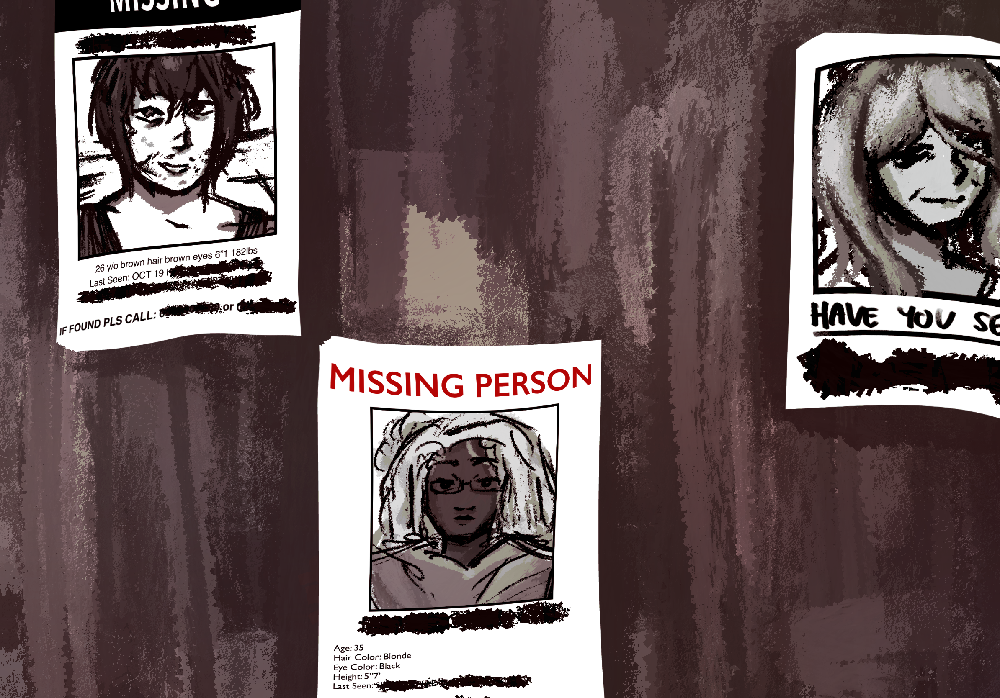

Unity and Anonymity: Standing Against the Attempts to Silence US
The US Government has made a decision to take down independent journalism. We, AnonymiTea aim to fight back for peacefully, for the public at large.
October 22, ████, 11:32 pm

A graphic made by an anonymous contributor
It is times like these where we, the people, need a safe outlet for journalism.
For the longest time, journalism has been the backbone of independent reporting,
where people publish their works, be it facts or opinions on matters. Journalism
hasn't been the safest job, with some journalists having to face threats: violence,
threats, and intimidation, all for exercising their right of free speech.
Issues of the world, political, controversial, nationwide,
the press—the people—should be free to report on it.
Unfortunately, we are fast approaching the point where we
are no longer free to express controversial thoughts so
openly. How is it that we live in a country that is widely
known for its Freedom of Speech, yet we have to fear for our
life for what we say?
There have been several arguments on
whether Freedom of Speech means that we are free to do and say
whatever without having to face any consequence or backlash—which
is not entirely true. However, the Government can not—should not
be able to interfere in any sort of lawful publishing and
expression of free speech. Journalism, for example.
This is following the US Government’s official announcement
to defund and order the shut down several US-based, independent
news article and journalism sites. Only weeks after the announcement,
October 14, ████, marks the beginning of the journalism take-downs.
To name a few renowned websites that have been affected: ReduxMedia, Norton News, and TruthSeekers.
Although there are still a couple of websites that are still up and running, the numbers are few,
and it is only a matter of time until there is none left.
As if taking down many sites was not bad enough, it did not
end there. As the sites disappeared, so did some prominent
journalists. Most notably, those who have published articles
about their criticisms and concerns regarding the US GOVERNMENT.
Several MISSING POSTERS have been posted throughout the States.

Three missing posters of journalists taken in Pennsylvania, ████████ ████, October 21 ████.
Three of them were identified to be the publishers of "How President Kenn Dowdy Has Further Ruined the US,"
and "Why McGruff Will Fail to Help The US"
A few others and myself have made this discovery, during our efforts to reach
out to the journalists affected by the shutdowns, to hear out and write about
their thoughts on the matter. We were met with a long silence—but not from their
families and friends. We were told horror stories about how they “watched them
leave the house, fully expecting them to come back home later. Only for that to
be the last time (I / we) saw them.”
This is a very big step back for everyone—the readers, the writers,
the citizens of the US—so we would like to take the first step forward
in this fight against censorship. Through AnonymiTea, we wish to provide
a safe way for people to publish news, to express themselves through writing,
and to inform themselves of what is truly going on.